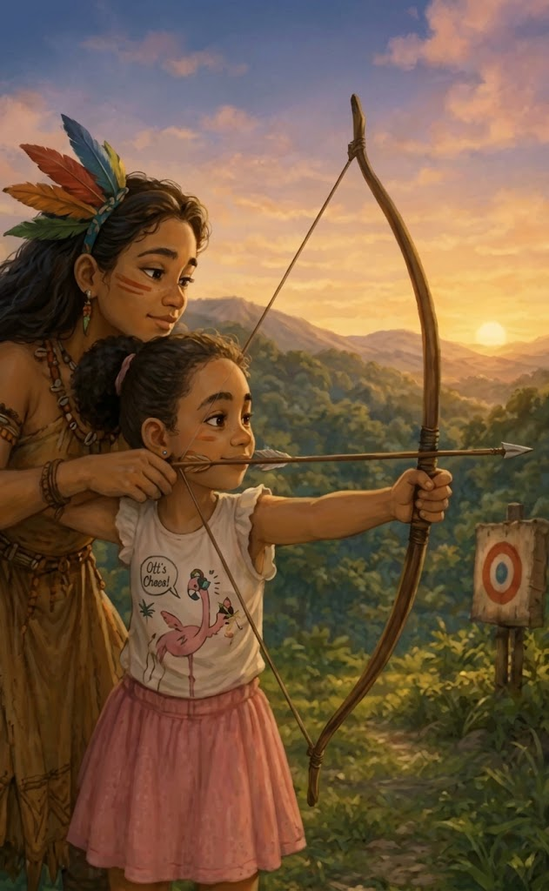
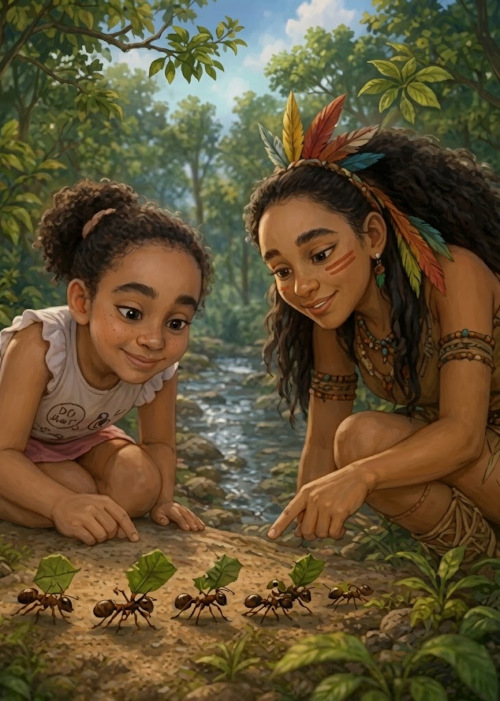
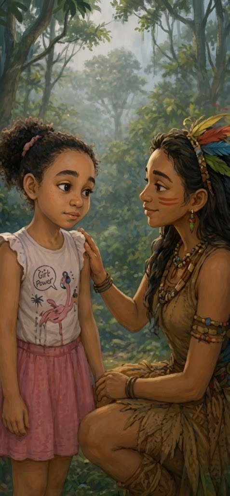
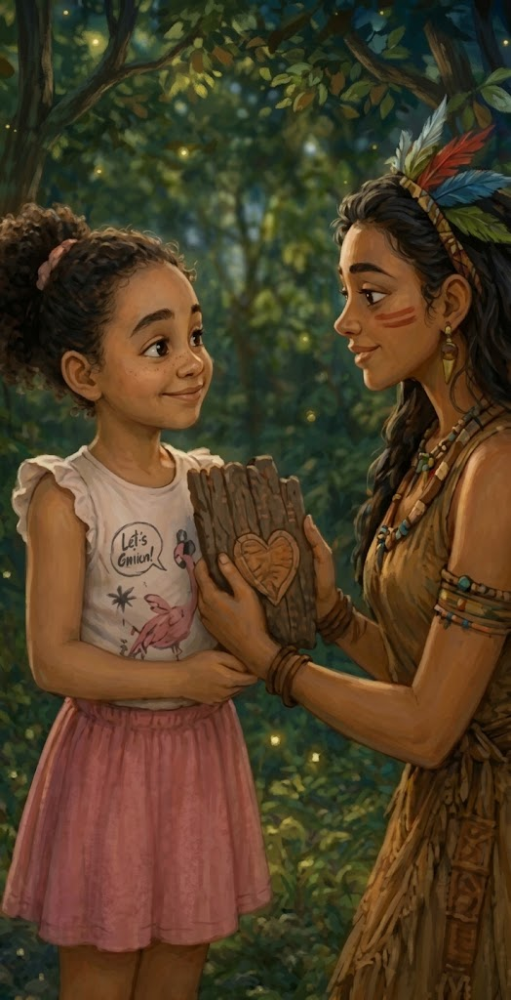
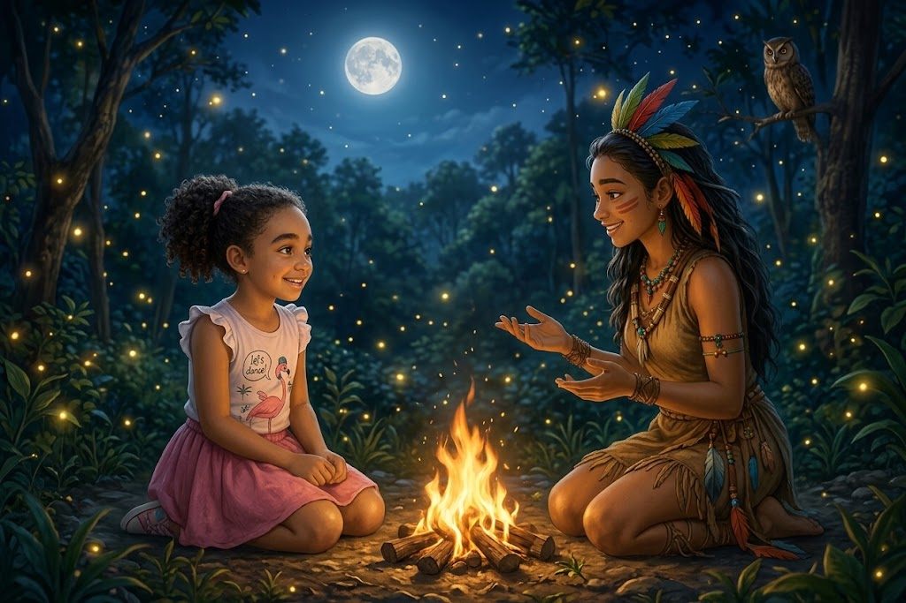

Angélica era uma menina de dez anos, curiosa, sensível e cheia de perguntas. Como muitas crianças de sua idade, começava a perceber que crescer significava aprender a compreender não apenas o mundo ao seu redor, mas também os sentimentos que carregava dentro do coração.
Certa noite, depois de um dia cheio de pensamentos, Angélica adormeceu profundamente. Quando abriu os olhos, descobriu que estava em uma floresta iluminada pelo luar. Pequenos vaga-lumes dançavam entre as árvores, o vento passava suavemente pelas folhas e um riacho corria próximo dali, como se cantasse uma antiga canção.
Foi então que ela conheceu Jupira, uma misteriosa e corajosa guerreira da floresta.
Jupira não era apenas uma guardiã daquele lugar. Era também uma grande conhecedora dos ensinamentos que a natureza oferecia a quem estivesse disposto a observar, ouvir e aprender.
Durante sete encontros, Angélica descobriria que a verdadeira coragem não significa nunca sentir medo. Significa aprender a caminhar mesmo quando o medo aparece.
A cada encontro, Jupira lhe ensinaria uma nova lição: respeito, foco, cuidado, honestidade, gentileza, gratidão e coragem para fazer o bem.
E, ao final daquela jornada, Angélica descobriria que a maior floresta que precisava aprender a conhecer era aquela que existia dentro de seu próprio coração.
Capítulo 1: O Som das Folhas
A noite estava tranquila.
Angélica dormia profundamente quando uma brisa suave tocou seu rosto.
Ela abriu os olhos.
Por alguns segundos, não conseguiu entender onde estava.
Não havia paredes, nem cama, nem o pequeno abajur ao lado de sua cabeceira.
Ao seu redor havia árvores enormes, cujas copas pareciam tocar o céu. A luz prateada da lua atravessava os galhos e iluminava o chão coberto por folhas secas e um macio tapete de musgo.
Vaga-lumes brilhavam por todos os lados.
Angélica levantou-se devagar.
Onde estou?
Uma coruja piou ao longe.
Angélica sentiu um pequeno arrepio.
Tem alguém aí?
O vento passou pelas árvores.
As folhas começaram a balançar, produzindo um som delicado.
Então, entre dois grandes troncos, surgiu uma jovem guerreira.
Ela caminhava com tranquilidade. Seus cabelos estavam enfeitados com penas coloridas e, nas costas, carregava um arco. Seu olhar era firme, mas transmitia serenidade.
Angélica deu um passo para trás.
A guerreira sorriu.
Não tenha medo, pequenina.
Quem é você?
Meu nome é Jupira.
Jupira?
Sim. E você está em um lugar onde a natureza ensina aqueles que sabem escutar.
Angélica olhou ao redor.
Mas... eu estou sonhando?
Jupira sorriu novamente.
Talvez. Mas algumas coisas que aprendemos em um sonho podem permanecer acordadas dentro de nós.
Angélica ficou em silêncio.
E por que este lugar parece tão tranquilo?
Jupira se aproximou e apontou para as árvores.
Porque a floresta não precisa gritar para ser forte. Ela simplesmente permanece firme.
Angélica observou uma pequena árvore crescendo entre duas pedras.
Ela conseguiu crescer mesmo com essas pedras no caminho.
Exatamente. A natureza nos ensina que nem todo obstáculo precisa ser enfrentado com força. Alguns precisam ser enfrentados com paciência.
Angélica sorriu.
Naquela noite, ela ainda não sabia, mas aquele seria apenas o primeiro de sete encontros.
O respeito começa quando aprendemos a observar o mundo com atenção, admiração e cuidado. Muitas vezes, a natureza ensina sem dizer uma única palavra.
Capítulo 2: A Flecha do Foco

Na noite seguinte, Angélica voltou à floresta.
Dessa vez, não sentiu medo.
Seguiu o caminho iluminado pelos vaga-lumes até chegar ao alto de uma colina.
Lá estava Jupira.
A guerreira segurava o arco com firmeza.
Uma flecha estava posicionada.
À frente, muito distante, havia um pequeno alvo preso a um tronco.
Jupira respirou profundamente.
Esticou a corda.
E soltou.
A flecha cortou o ar e atingiu o centro do alvo.
Angélica ficou admirada.
Como você conseguiu acertar tão longe?
Jupira guardou o arco.
Antes de acertar o alvo, precisamos saber para onde estamos mirando.
Então basta mirar?
Não. Também precisamos ter paciência, concentração e coragem para tentar novamente quando erramos.
Angélica pensou por alguns segundos.
E se eu não souber exatamente o que quero?
Então comece descobrindo um pequeno objetivo.
Pequeno?
Sim. Grandes sonhos são construídos com pequenos passos.
Jupira entregou a Angélica uma flecha.
Segure.
Angélica tentou posicioná-la.
Suas mãos tremiam.
Estou com medo de errar.
Errar não diminui você, Angélica.
Não?
Não. O erro apenas mostra que ainda existe algo para aprender.
Angélica respirou fundo.
Mirou.
Soltou.
A flecha passou longe do alvo.
Ela abaixou a cabeça.
Jupira colocou a mão sobre seu ombro.
Agora você sabe onde não deve mirar.
Angélica riu.
Então eu aprendi alguma coisa!
Exatamente.
Ter foco significa saber onde queremos chegar e continuar tentando, mesmo quando o primeiro resultado não é perfeito. Errar também faz parte do caminho de quem aprende.
Capítulo 3: O Cuidado com as Pequenas Coisas

Na terceira noite, Angélica e Jupira caminhavam próximas a um riacho.
A água era cristalina e pequenas pedras brilhavam no fundo.
De repente, Angélica deu um pulo.
Ai!
Ela quase havia pisado em uma fileira de formigas.
Jupira se abaixou.
Veja.
As formigas carregavam pequenos pedaços de folhas.
Elas estão trabalhando juntas — observou Angélica.
Sim.
Mas são tão pequenas...
Jupira sorriu.
Pequeno não significa sem importância.
Angélica ficou observando.
Uma formiga carregava uma folha muito maior que seu próprio corpo.
Como elas conseguem?
Com esforço, cooperação e persistência.
Angélica ficou pensativa.
Então cada ser tem sua importância?
Cada vida merece respeito.
Jupira apontou para uma árvore enorme.
Você olha para aquela árvore e percebe sua grandeza.
Depois apontou para uma pequena flor.
Mas talvez não perceba que ela também faz parte do equilíbrio da floresta.
Angélica se aproximou da flor.
Acho que nunca tinha pensado assim.
É por isso que devemos aprender a cuidar também das pequenas coisas.
Toda forma de vida merece respeito. Cuidar dos pequenos seres e das pequenas coisas demonstra que temos responsabilidade e carinho pelo mundo que compartilhamos.
Capítulo 4: A Coragem de Dizer a Verdade

Na quarta noite, a floresta estava diferente.
Uma névoa fina cobria o caminho.
Angélica caminhava em silêncio.
Jupira percebeu que havia alguma coisa incomodando a menina.
O que aconteceu?
Angélica abaixou os olhos.
Eu fiz uma coisa errada.
Todos nós cometemos erros.
Eu escondi uma nota baixa da minha mãe.
Jupira permaneceu em silêncio.
Angélica continuou:
Eu fiquei com vergonha. Tive medo de ela ficar triste comigo.
Jupira caminhou até uma pequena clareira.
Veja a névoa.
Angélica olhou.
Ela está escondendo o caminho.
Assim também acontece com a mentira. Quando escondemos a verdade, podemos até achar que estamos protegendo alguém, mas acabamos dificultando o caminho.
Mas dizer a verdade pode ser difícil.
Pode.
Então por que devemos dizer?
Jupira colocou a mão sobre o coração.
Porque a verdade pode doer por um instante, mas a mentira pode permanecer como uma pedra dentro do peito.
Angélica respirou fundo.
Então eu preciso contar para minha mãe.
Sim. E também precisa aceitar as consequências do seu erro.
Mesmo que ela fique brava?
Mesmo assim.
Jupira sorriu.
Coragem não é fazer apenas aquilo que é fácil. Coragem também é fazer aquilo que é certo.
A névoa começou lentamente a desaparecer
Ser honesto nem sempre é fácil, mas assumir nossos erros nos ajuda a crescer, recuperar a confiança e manter o coração tranquilo.
Capítulo 5: O Escudo da Gentileza

Na quinta noite, Angélica contou a Jupira sobre um colega da escola.
Ele fala de maneira muito grosseira com todo mundo.
E como você reage?
Às vezes fico com raiva. Dá vontade de responder do mesmo jeito.
Jupira pegou um pedaço firme de casca de árvore.
Imagine que isto seja um escudo.
Angélica segurou a casca.
Um escudo?
Sim. Mas não para atacar.
Então para quê?
Para proteger seu coração.
Angélica franziu a testa.
E como um escudo pode me proteger de palavras ruins?
Quando alguém oferece grosseria, você não precisa devolver grosseria.
Mas isso não é ser fraca?
Jupira balançou a cabeça.
Não. É ter controle sobre si mesma.
Angélica ficou pensativa.
Então ser gentil é uma forma de ser forte?
Exatamente.
Jupira apontou para uma árvore.
Uma árvore forte não precisa derrubar outra árvore para provar sua força.
Angélica sorriu.
Gostei disso.
Lembre-se: ser gentil não significa aceitar injustiças. Significa não permitir que a raiva dos outros transforme você em alguém que não deseja ser.
A gentileza é uma forma de força. Podemos defender nossos limites e, ao mesmo tempo, escolher não devolver o desrespeito com mais desrespeito.
Capítulo 6: O Canto da Gratidão

Na sexta noite, Angélica encontrou Jupira sentada perto de uma pequena fogueira.
As chamas dançavam suavemente.
Faíscas subiam pelo ar como pequenas estrelas.
Jupira pediu:
Feche os olhos.
Angélica obedeceu.
O que você está ouvindo?
Ela prestou atenção.
Uma coruja.
Mais alguma coisa?
Os sapos.
E agora?
A água do riacho
.
Jupira sorriu.
A noite possui sua própria música.
Angélica abriu os olhos.
É bonita.
E o que você ouviu hoje que merece sua gratidão?
Angélica pensou.
Minha família.
Muito bem.
Meus amigos.
Muito bem.
A comida que tenho em casa.
Jupira assentiu.
Angélica continuou:
E também as pessoas que cuidam de mim.
Jupira sorriu.
Percebeu?
O quê?
Quando começamos a procurar motivos para agradecer, descobrimos que existem muitas
coisas boas ao nosso redor.
Angélica olhou para a fogueira.
Acho que às vezes fico tão preocupada com aquilo que não tenho que esqueço de
perceber aquilo que já tenho.
Esse é um dos segredos da gratidão.
A gratidão nos ensina a perceber o valor das coisas simples. Quando reconhecemos o bem que existe em nossa vida, aprendemos também a valorizar e compartilhar esse bem.
Capítulo 7: A Guerreira do Bem
Na sétima noite, Angélica percebeu que a floresta estava especialmente silenciosa.
A lua iluminava toda a clareira.
Jupira estava esperando por ela.
Mas havia algo diferente no olhar da guerreira.
Angélica sentiu um aperto no coração.
Você está triste?
Não, pequena guerreira. Apenas chegou o momento de sua caminhada continuar sem que eu precise estar ao seu lado.
Angélica ficou triste.
Eu não quero ir embora.
Jupira se aproximou e colocou uma pequena pena azul nas mãos da menina.
Então não pense que está indo embora. Pense que está levando consigo tudo aquilo que aprendeu.
E se eu esquecer?
Jupira sorriu.
Você não esquecerá.
Como tem tanta certeza?
Porque os verdadeiros ensinamentos não ficam apenas na memória. Eles aparecem nas nossas atitudes.
Angélica segurou a pena.
E como vou saber se estou sendo uma boa pessoa?
Jupira respondeu:
Quando você respeitar alguém que é diferente de você, estará carregando a força da floresta.
Quando falar a verdade mesmo com medo, estará carregando a força da floresta.
Quando cuidar de alguém mais frágil, estará carregando a força da floresta.
Quando escolher a gentileza em vez da crueldade, estará carregando a força da floresta.
Quando agradecer pelo que possui, estará carregando a força da floresta.
Angélica sentiu os olhos se encherem de lágrimas.
Jupira então a abraçou.
Caminhe sempre de cabeça erguida, mas nunca se esqueça de olhar para quem precisa de uma mão amiga.
Eu vou tentar.
Não precisa ser perfeita, Angélica. Apenas procure ser melhor a cada dia.
A menina apertou a pequena pena azul contra o peito.
Eu nunca vou esquecer você.
E eu nunca estarei tão longe quanto imagina.
A luz da lua ficou cada vez mais forte.
Os vaga-lumes começaram a voar ao redor de Angélica.
Jupira sorriu.
Vá, pequena guerreira. Sua maior aventura começa quando você acordar.
O Despertar
Angélica abriu os olhos.
O sol entrava pela janela de seu quarto.
Por alguns segundos, ficou imóvel.
Será que tudo havia sido apenas um sonho?
Ela olhou para a própria mão.
Havia uma pequena pena azul sobre o travesseiro.
Angélica sorriu.
Levantou-se e foi até o espelho.
Por um instante, lembrou-se das palavras de Jupira.
Ela ainda tinha muito a aprender.
Ainda cometeria erros.
Ainda sentiria medo, raiva, tristeza e insegurança.
Mas agora sabia que crescer não significava deixar de sentir.
Significava aprender a compreender aquilo que sentia e escolher, todos os dias, que tipo de pessoa queria ser.
Angélica guardou a pena azul em uma pequena caixa.
Depois respirou fundo e abriu a porta do quarto.
Sua jornada continuava.
E, dentro do coração, carregava sete ensinamentos:
Respeitar.
Ter foco.
Cuidar.
Ser honesta.
Ser gentil.
Agradecer.
E fazer o bem.
Naquele dia, Angélica saiu de casa diferente.
Não porque havia deixado de ser criança.
Mas porque havia descoberto que, mesmo sendo pequena, já podia carregar dentro de si a coragem de uma grande guerreira.
A verdadeira coragem não está em nunca sentir medo.
Está em reconhecer o medo e ainda assim escolher fazer o que é certo.
Cada criança possui dentro de si uma pequena floresta: cheia de sonhos, sentimentos, dúvidas, descobertas e possibilidades.
Quando aprendemos a cuidar dessa floresta interior, podemos crescer com mais respeito, responsabilidade, coragem e amor.
E talvez seja justamente aí que começa a verdadeira aventura de crescer.
Créditos
Esta história é uma obra de ficção infantil inspirada em elementos simbólicos da natureza, na literatura fantástica e em valores humanos como respeito, coragem, honestidade, gentileza e gratidão.
A personagem Cabocla Jupira foi construída como uma figura literária de inspiração na imagem simbólica da mulher guerreira ligada à natureza e aos conhecimentos tradicionais presentes no imaginário cultural brasileiro.
A narrativa não pretende representar, de forma documental, os fundamentos específicos das diferentes tradições religiosas e culturais que trabalham com a figura dos Caboclos.
Agradecimento:
À riqueza da cultura popular brasileira e às diversas tradições que valorizam a natureza, a ancestralidade, a solidariedade, a coragem e o respeito à vida.
Para Angélica, que ainda está descobrindo o mundo — e, principalmente, descobrindo a si mesma.